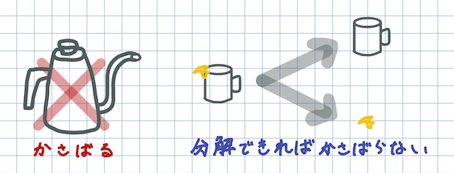

登山やキャンプ、釣りなどアウトドアの休憩時間に、ハンドドリップのコーヒーを飲みたいという人は少なくない。
しかし、コーヒケトルは注ぎ口が細くなっている独特な形状をしており、持ち運びがしづらい。
そのため、やもなくインスタントコーヒーで我慢している人が非常に多い。
これらのハンドドリップコーヒー難民を一人でも救済するために、アウトドア用の
小さな鍋やコップに取り付けることができる「注ぎ口」を製作する。
まず「なぜ注ぎ口が細いケトルを用意しなければ、ハンドドリップを諦めなければいけないのか」から説明します。
コーヒーは、お湯と粉の接触時間が長いほどコーヒーの成分がよくでます。
お湯を細くしてゆっくり回してドリップすることで、お湯と粉の接触時間が長くなります。
ゆっくりドリップすることで下にかかる圧力は小さくなるので、沪過するスピードはゆっくりになります。
ゆっくりなると、接触時間が増えてある程度の濃さがでる、ということなんです。
お湯を細くしてドリップすることとは、コーヒーの粉とお湯の接触時間を調整し濃度を調整している、
ということになります。
そのためにある程度のお湯の細さが必要、となるわけです。
↑の理由からハンドドリップにはコーヒーケトルが必要となりますが、今回は持ち運びを重視し、
アウトドア用の小さな鍋やコップに取り付けることができる「注ぎ口」を製作する。

黄色の部品を作る。
調べると同じコンセプトの既製品が存在することがわかったが、こちらの商品は
特定のコップ（snowpeakチタンマグ450）専用なので、様々な調理器具に対応したものを製作し差別化を図る。
そもそもpla素材の部品でお湯を注ぐことができるのかテストした。93度のお湯をpla印刷物にかけ変化を観察した。
印刷物が曲がってしまった。
ABSのガラス転移点（軟らかくなり始める温度）は105ºCらしいので、ABSなら実現できるのかも、、
ABSフィラメントを購入する余裕がないため一旦見送ることにする。